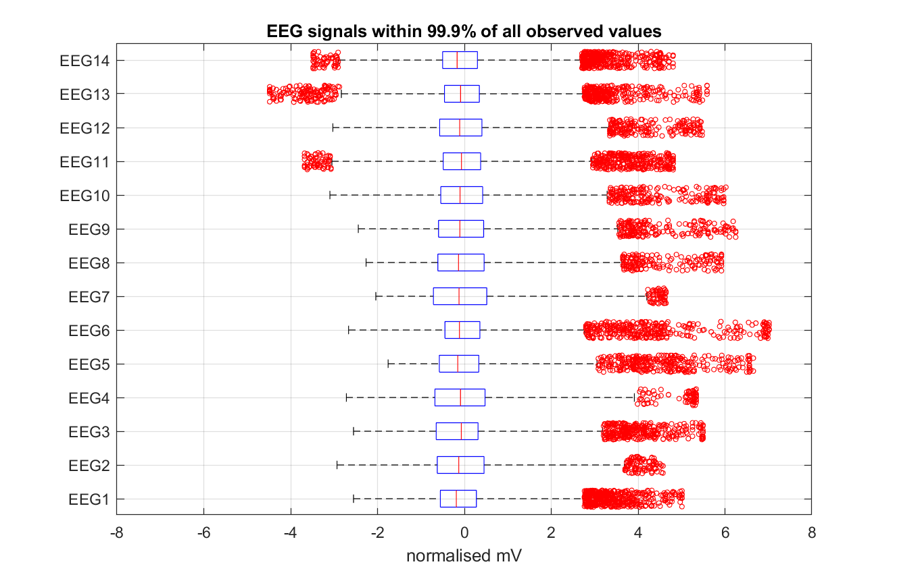
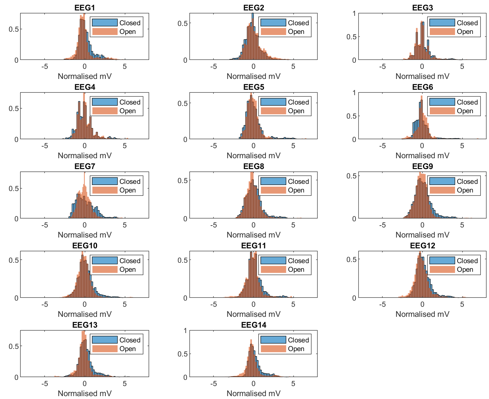
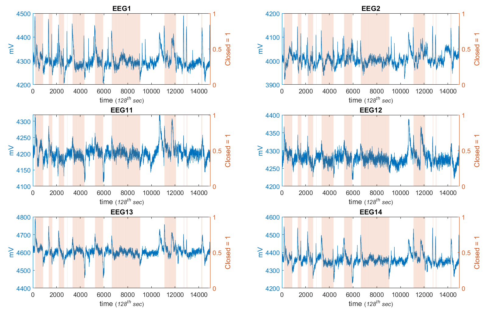

Autonomous vechicle microsleep detector Vol1: EDA
Binary classification using EEG readings (part 1 of 3)
Produce a detector that distinguisihes when a car’s driver has eyes closed. This detector will connect to an autopilot system for the car temporarily until driver regains control, otherwise safely brings the car to a halt on the side of the road. Detector will have access to EEG signals connected to drivers head.
This is the first in a 3 part project that shows how brain waves can be used to predict if a persons eyes are closed. The mock-bussiness problem is that of a car’s partial autopilot system. Part 1 is this Exploratory data analysis, Part 2 is the feature engineering and model creation, Part 3 explores the process of re-weighting an accuracy metric, to favour correctly predicting when the eyes are closed.
Table of Contents
The Business Problem
The dataset for training the model, described from the source;
“All data is from one continuous EEG measurement with the Emotiv EEG Neuroheadset. The duration of the measurement was 117 seconds. The eye state was detected via a camera during the EEG measurement and added later manually to the file after analysing the video frames. ‘1’ indicates the eye-closed and ‘0’ the eye-open state. All values are in chronological order with the first measured value at the top of the data."
Critical to any data science project, is understanding the data. This is best done by exploring the application context, and reading between the lines of the envisioned use case. Some assumptions can be implied from the problem statement;
- Detector must work on-line; makes predictions only with the sequence of data points leading up to prediction timestep.
- A car autopilot that turns on when it’s not supposed to, isn’t nearly as bad as one that doesn’t turn on when it’s supposed to.
- Not all “eyes closed” are equal - blinking should not trigger the autopilot system.
- Temporal consistency in autopilot state (on or off) is important to usability. Like a flickering light, avoiding an autopilot that switches on & off is critical for the final product usability.
Before trying models to predict the eye state, we will explore the datasets' shapes, patterns & anomalies in order to develop some hypotheses about which modelling technique is well suited.
While the dataset at first glance is time series, we will refrain from making any assumptions about how best to treat it, until it is understood. exploration will be from two perspectives;
- Distributions of values & correlations between variables, as if it were a static dataset.
- Temporality. Including wave patterns & temporal relationships etc.
Static Dataset analysis
Variables 1 - 14 are the voltage recorded by the EEG at different points on the subjects brain, and the 15th is the eye state detected via a camera.
load('EEGrawData.mat');
% View data type, min, max and median of each of the raw data columns
summary(rawData)
Variables:
EEG_1: 14980×1 double
Values:
Min 1030.8
Median 4294.4
Max 3.0923e+05
EEG_2: 14980×1 double
Values:
Min 2830.8
Median 4005.6
Max 7804.6
EEG_3: 14980×1 double
Values:
Min 1040
Median 4262.6
Max 6880.5
EEG_4: 14980×1 double
Values:
Min 2453.3
Median 4120.5
Max 6.4256e+05
EEG_5: 14980×1 double
Values:
Min 2089.7
Median 4339
Max 6474.4
EEG_6: 14980×1 double
Values:
Min 2768.2
Median 4617.9
Max 3.6256e+05
EEG_7: 14980×1 double
Values:
Min 2086.2
Median 4070.3
Max 5.6718e+05
EEG_8: 14980×1 double
Values:
Min 4567.2
Median 4613.3
Max 7264.1
EEG_9: 14980×1 double
Values:
Min 1358
Median 4199.5
Max 2.6564e+05
EEG_10: 14980×1 double
Values:
Min 1816.4
Median 4229.2
Max 6674.4
EEG_11: 14980×1 double
Values:
Min 3273.3
Median 4200.5
Max 6823.1
EEG_12: 14980×1 double
Values:
Min 2257.9
Median 4276.9
Max 7002.6
EEG_13: 14980×1 double
Values:
Min 86.667
Median 4603.1
Max 1.5231e+05
EEG_14: 14980×1 double
Values:
Min 1366.2
Median 4354.9
Max 7.159e+05
Eyestate: 14980×1 double
Values:
Min 0
Median 0
Max 1
Median voltage values are around 4300, minimums and maximums are roughly the same, except a few observations that are two orders of magnitude higher (or lower). These can be removed by replacing values outside the upper and lower 0.1% quantile with their nearest value in time.
N = height(rawData); % number of observations
N_seconds = 117; % approx length of timeseries in seconds
idx_openclose = rawData{:,'Eyestate'};
eegName= erase( string(strcat('EEG',num2str([1:Nvars]') ) )',' ');
allqntls = quantile(rawData{:,1:Nvars},[0.001, 0.999]);
TimeSeries_cln = rawData{:,1:Nvars};
% top and bottom 0.1% of each EEG is removed as an outlier.
TimeSeries_cln( TimeSeries_cln>= allqntls(2,:) | TimeSeries_cln<= allqntls(1,:) ) =NaN;
TimeSeries_cln = fillmissing(TimeSeries_cln,'nearest');
figure('Position',[30 629 1746 312]);
for fi = 1:Nvars
histogram( TimeSeries_cln(:,fi) ,linspace(min(allqntls(:)),max(allqntls(:)),240),'EdgeColor','none'); hold on;
end
title('EEG signals within 99.9% of all observed values'); xlabel('mV');
Each of the EEGs have a slightly different range of values, but this will be irrelevant as long as each EEG is standardised before feeding into a model, or, if the model treats each of them as a unique dimension. There appears to be some histograms with different skew which will be easiest viewed with a boxplot, after normalising the outlier-free data.
TimeSeries_clnnorm = normalize( TimeSeries_cln );
figure('Position',[141,224,1586,717]);
% Set Outliers to display if they are outside 3 std. deviations
boxplot( TimeSeries_clnnorm ,'Orientation', 'horizontal','Symbol','ro','Jitter',1,'Whisker',3);
yticklabels(eegName); grid on;
xlim([-8 , 8]); xlabel('normalised mV')
title('EEG signals within 99.9% of all observed values')

The boxplot whisker length is set to 3 times the interquartile range. Seeing more outliers across all variables' box-plots to the right, means the distribution will have heavy tails (compared to a normal distribution) i.e. more very large values than very small values. The prediction model must be capable of handling asymmetric extreme values.
Insight #1: “EEG values' extremes are asymmetric around their medians”
Whats not clear, is whether during eyes closed, the EEG variables differ to the open state, (regardless of which timestep). So the question is;
Can the data be treated as independent observations, rather than as time-series, for the purpose of classifying the state of the eye?
If the data were strictly time-invariant, EEG values could predict the eye state regardless of what the eye-state was before or after an observation. A histogram of EEG values comparing eye states should give a hint if this is happening.
% Standardise values to have zero mean
figure('Position',[141,224,1586,717]);
for v=1:Nvars
subplot(5,3,v)
histogram(TimeSeries_clnnorm(idx_openclose==1,v),'Normalization','pdf'); hold on;
histogram(TimeSeries_clnnorm(idx_openclose==0,v),'Normalization','pdf','EdgeColor','none');
title(eegName(v)); legend({'Closed','Open'}); xlabel('Normalised mV')
xlim([-8 , 8]);
end

Globally, it’s not obvious that magnitude of EEG values is different for each eye-state.
Insight #2: “Mean EEG value doesn’t change much globally with eye state”
Temporal Patterns
Next, is to put the assumption that the dataset is stationary on hold, and inspect the temporality of the data. Visualising the time-based interdependencies of EEG variables might be hard as there are quite a few. Though overlaying eye-state could help to reveal obvious patterns.
% View data as time series
figure('Position',[141,224,1586,717]);
for v=1:Nvars
subplot(5,3,v)
plot(TimeSeries_cln(:,v)); ylabel('mV')
yyaxis right; bar(idx_openclose,'LineStyle','none','FaceAlpha',0.2); ylabel('Closed = 1')
xlabel('time (128^t^h sec)');
title(eegName(v))
end
Plotted as a time series it’s clear that for some EEGs, the signal ‘spikes’ as the patients' eyes open or close. It’s hard to make out on the small plots. Zooming in on transition from open to closed eyes in the range t= 2000 - 3500;
for v=1:Nvars
xlim(subplot(5,3,v),[2000 , 3500])
end
The patterns happen before opening & closing, including a brief blink around t = 2800. So, the pattern is more specific for regular closing, compared to blinking only.
The effect is more pronounced in EEGs 1-2 & 11-14 across the whole dataset.
% View particular Variables only, as time series.
figure('Position',[141,224,1586,717]);
vars=[1:2, 11:14];
for v=vars
subplot(4,2,find(vars==v))
yyaxis left; plot(TimeSeries_cln(:,v)); ylabel('mV')
yyaxis right; bar(idx_openclose,'LineStyle','none','FaceAlpha',0.2); ylabel('Closed = 1')
xlabel('time \fontsize{8}({\it128^t^h sec})');
title(eegName(v))
end

Insight #3: “Lead signals exist for closing & opening eys. Strongest in EEGs 1-2 & 11-14”
It’s worth noting that the temporal shape and magnitude of the spikes differ across time, for all variables. Transition signals begin at different values also.
Insight #4: “Shape of Lead signal is independent of starting magnitude”
There is also an anomalous pattern that occurs only twice in the series, prior to the last time the subject closes eyes @ t ~ 11,000. It looks like the rest of the eye-state transition patterns, but occurs earlier, & is more dragged out. It’s also relatively stronger in EEGs which normally don’t have obvious spikes that signal an eye-state transition.
figure('Position',[141,224,1586,717]);
vars=[5,8,1,13];
for v=vars
subplot(2,2,find(vars==v))
yyaxis left; plot(TimeSeries_cln(:,v)); ylabel('mV')
xlabel('time \fontsize{8}({\it128^t^h sec})'); title(eegName(v))
annotation_datadims('rectangle',[10000, min(ylim), 1500,diff(ylim)] ,'FaceAlpha',0.2,'FaceColor','g');
yyaxis right; bar(idx_openclose,'LineStyle','none','FaceAlpha',0.2); ylabel('Closed = 1')
end
EEG1 has a spike around t=11,000 not too different to other spikes near eye-state changes. Though in EEG8, this spike @t=11,000 is found also, and much larger compared to the other spikes in EEG8.
Insight #5: “Similar patterns to transition-spikes in EEGs 1-2, 11-14 occur at some non-transition timesteps, but EEGs 5 & 8 have a uniquely pronounced signal at this time also”
The EEGs without pronounced spikes around eye-state transitions could be critical to predicting the transitions, because they have pronounced spikes only during the anomalous patterns after t=11,000 which could be used by a model to nullify the normal (false) transition-spike detection.
Removing blinking from the Closed-eyes class
As the machine learning application is to detect microsleep in a driver, blinking should not classify as being asleep (in a microsleep). A quick google search of blinking shows microsleeps occur with duration 500 miliseconds. So for this analysis, closed eye sequences of less than 0.45 seconds will be converted to the open eye class.
% remove 'eyes blinking' from the dataset: closed eyes for under 1 second only
blinkduration_seconds = 0.45;
blinkduration_tsteps = N*(blinkduration_seconds/N_seconds);
idx_blink = movsum( idx_openclose ,[blinkduration_tsteps blinkduration_tsteps])<blinkduration_tsteps & idx_openclose;
idx_openclose = ~idx_blink & idx_openclose;
Windowed EEG correlations
Perhaps the degree of correlation between EEGs changes with eye state. i.e. do EEG values “move together” more in one eye state vs the other? The covariance matrix needs to be calculated with observations during open eyes, and again with closed eyes. The difference between the two matrices will be non-zero if EEG correlations are in some way dependent on eye state.
% Correlation difference between open eye-state and closed eye-state
corr_delta = corr(TimeSeries_clnnorm(idx_openclose==1,:)) - corr(TimeSeries_clnnorm(idx_openclose==0,:));
% get values in the lowest and highest 5% quantiles
cor_10 = quantile(corr_delta(:),[0.05 0.95]);
corr_10_idx = triu(ones(14),1)==1 & (corr_delta>cor_10(2) | corr_delta<cor_10(1));
[rw,cl] = find(corr_10_idx);
EEGcorr = array2table(corr_delta,'RowNames',cellstr(eegName)','VariableNames',cellstr(eegName));
disp(EEGcorr(unique(rw),unique(cl)))
EEG2 EEG5 EEG6 EEG13 EEG14
__________ ________ _______ ________ _________
EEG1 -0.18467 0.15676 0.17309 -0.14417 -0.041972
EEG2 0 0.088926 0.20876 -0.24237 -0.2593
EEG3 0.070592 0.13336 0.13232 -0.21959 -0.083616
EEG4 -0.0015357 0.059228 0.16603 -0.22099 -0.13115
EEG7 -0.037652 0.023117 0.12199 0.11297 0.18187
Of the 14 x 14 EEG Covariance matrix, the most extreme differences in correlations between open and closed eye states are around 0.1 - 0.25. For example, EEG1 is 0.178 less correlated with EEG2, when the eyes are open.
This is promising, but still far from useful as the business problem requires an online detection algorithm. these covariance matrix pertubations need to be occuring on a local time-scale, not just across the entire dataset.
Moving window of EEG correlations
To check if this insight is going to be practical, the effect must occur on a small time window. For example, “the cars autopilot should activate with a delay no longer than 1 second” could be an upper bound on the final product’s design.
Dividing the 117 second sequence randmoly, into buckets of roughly 0.5 seconds in length, and then checking whether the covarianve matrices differ between eye states on this smaller timescale;
% partition the data into 200 buckets, while maintaining class balance in each bucket (open-close eyes)
CV = cvpartition(idx_openclose,'KFold',200 );
disp(CV)
K-fold cross validation partition
NumObservations: 14980
NumTestSets: 200
TrainSize: 14906 14905 14905 14905 14905 14905 14905 14905 14905 14905 ...
TestSize: 74 75 75 75 75 75 75 75 75 75 ...
Each bucket is 75 timesteps, and should have the same balance between open and closed state observations. Now we have the differences in correlation matricies, for each of the 200 buckets.
There will be 91 correlations between variables (14 variables, less correlations between themselves). Each of the 200 buckets will have 91 values showing the change in correlations between EEGs due to the eye state.
% loop over each of the 200 samples, and store the covariance matrix of
% EEGs for both Open and Closed eye states.
Xcorrdiff = NaN(200 ,((Nvars^2)-Nvars)/2 );
for ci = 1:200
% correlations between EEGs for the current bucket of random observations
XClosed = corr(TimeSeries_clnnorm(CV.test(ci) & idx_openclose==0,:));
XOpen = corr(TimeSeries_clnnorm(CV.test(ci) & idx_openclose==1,:));
% vectorise the upper right triangle of the correlation matrix.
XClosed = XClosed( triu(ones(14),1)==1 );
XOpen = XOpen( triu(ones(14),1)==1 );
% store the differences between corelation vectors
Xcorrdiff(ci,:) = diff([XOpen,XClosed],1,2);
end
% calculate significance tests on each corelation vector element, to see if open and closed states has an effect with 99% confidence.
significant_delta = arrayfun(@(x) ttest(Xcorrdiff(:,x),0,'Alpha', 0.01) , 1:size(Xcorrdiff,2) );
figure('Position',[141,224,1586,717]);
boxplot((Xcorrdiff));
% remove the correlations which do not significantly differ between open and closed eyes, across the 200 samples.
Xcorrdiff_significant = Xcorrdiff;
Xcorrdiff_significant(:,significant_delta==0)=NaN;
[rw,cl] = find(triu(ones(14),1)==1);
corrlabels= erase( string(strcat(num2str(rw),'_',num2str(cl) ) )',' ');
corrlabels( significant_delta==0)='';
hold on; boxplot((Xcorrdiff_significant),'PlotStyle','Compact','Labels',corrlabels); set(gca,'XTickLabelRotation',90)
grid on; xlabel('EEG correlations'); ylabel('Change in correlation due to eye state');
title('Distributions of in EEG correlation differences due to eye state, across the 200 samples')
The box plot shows how the 91 correlation changes are distributed over the 200 randomly picked buckets.
Highlighted are the correlations which change due to eye state, with 99% confidence (against the zero mean normal assumption). For example, the left most box and whisker plot is shows the 200 samples are distributed above zero, with all but a few outliers. It shows EEGs 1 & 2 are more stronbgly correlated when eyes are open. And EEG 1 & 8, are less correlated when eyes are open, though the effect ismore variaed across the 200 buckets (by the longer box, compared to EEG1-2).
Insight #6: “Some EEG correlations shift significatnly depending on eye state."
EDA Summary
Through inspecting the dataset, we’ve seen both visually and with some statistics, how a model might best split the two classes using the 14 EEGs. In summary;
Insights found in the dataset;
- EEG values' extremes are asymmetric around their medians.
- Mean EEG value doesn’t change much globally with eye state.
- Lead signals exist for eyes opening & eyes 4. closing. Strongest in variables 1-2 & 11-14.
- ‘Shape’ of Lead signal is independent of starting magnitude.
- False transition signals are indicated by anomalies in EEGs 5 & 8.
- Some EEG correlations shift significatnly depending on eye state.
save('EEGloseEyes_EDA.mat')
In this Exploratory Data Analysis, we’ve established a foundation of knowledge about the data & the probelm. Now the model selection process can start.